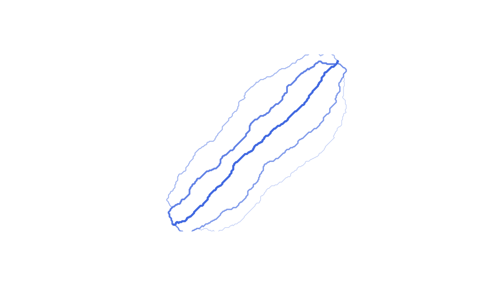

Find k spatially distinct corridors between an origin and destination using iterative penalty rerouting. The function produces a ranked set of geographically different route alternatives rather than minor variants of the same optimal path.
Usage
route_k_corridors(
cost_surface,
origin,
destination,
k = 5L,
penalty_radius = NULL,
penalty_factor = 2,
min_spacing = NULL,
neighbours = 8L,
method = c("dijkstra", "bidirectional", "astar"),
resolution_factor = 1L
)Arguments
- cost_surface
A terra SpatRaster (single band). Same requirements as
route_corridor. Must NOT be acorridor_graphobject (the cost surface is modified each iteration).- origin
sf/sfc POINT or numeric c(x, y). Same as
route_corridor.- destination
sf/sfc POINT or numeric c(x, y). Must differ from origin.
- k
Integer >= 1. Number of diverse corridors to find. May return fewer if no feasible alternative exists.
- penalty_radius
Numeric. Buffer distance (CRS units) around each found path within which cells are penalized. If NULL (default), uses 5 percent of the straight-line distance between origin and destination.
- penalty_factor
Numeric > 1.0. Multiplier applied to cells within the penalty radius. Cumulative: a cell near paths 1 and 2 is multiplied by
penalty_factor^2. Default 2.0.- min_spacing
Numeric or NULL. Minimum average distance (CRS units) between a candidate and its nearest prior accepted path. Candidates below this threshold are discarded and the iteration retries with increased penalty (up to 3 retries per rank). NULL (default) disables the check.
- neighbours
Integer. Cell connectivity: 4, 8 (default), or 16.
- method
Character. Routing algorithm: "dijkstra", "bidirectional", or "astar" (default, recommended for iterative use).
- resolution_factor
Integer >= 1. Aggregation factor applied once before routing begins.
Value
An sf object with up to k rows, each a LINESTRING, with columns:
- alternative
Integer. 1 = optimal path on the original surface, 2+ = alternatives generated by iterative penalty rerouting. Alternatives are not guaranteed to increase monotonically in cost.
- total_cost
Accumulated traversal cost on the original (unpenalized) surface, allowing fair comparison across ranks.
- n_cells
Number of raster cells in the path.
- path_dist
Path length in CRS units.
- straight_line_dist
Euclidean distance from origin to destination.
- sinuosity
path_dist / straight_line_dist.
- mean_spacing
Mean distance from this path's vertices to the nearest point on the rank-1 path. NA for rank 1.
- pct_overlap
Fraction of this path's cells within
penalty_radiusof the rank-1 path. NA for rank 1.
Class is c("spopt_k_corridors", "sf"). The "spopt" attribute
contains: k_requested, k_found, penalty_radius,
penalty_factor, min_spacing, total_solve_time,
total_graph_build_time, total_retries, method,
neighbours, resolution_factor.
Details
In corridor planning, the mathematically optimal route is frequently infeasible due to factors not fully captured in the cost surface: landowner opposition, permitting constraints, or environmental findings during field survey. Presenting k diverse alternatives allows planners to evaluate trade-offs and select routes that are robust to on-the-ground uncertainty.
The function uses a heuristic buffered penalty rerouting method
adapted for raster friction surfaces. After finding the least-cost path,
cells within a geographic buffer (penalty_radius) are penalized
by multiplying their friction by penalty_factor. The solver then
runs again on the modified surface. Each accepted path's penalty is
cumulative, pushing subsequent corridors into genuinely different geography.
The general idea of iterative penalty rerouting originates in the alternative route generation literature (de la Barra et al., 1993), where it was applied to road network graphs. Abraham et al. (2013) evaluate it as one of several alternative route strategies for road networks. This implementation adapts the concept to raster surfaces by penalizing a spatial buffer zone around prior paths (rather than exact reused edges), which directly targets geographic separation at the corridor scale.
This approach is distinct from the formal k-shortest paths with limited overlap (kSPwLO) algorithms of Chondrogiannis et al. (2020), which guarantee overlap-bounded optimality through edge elimination. The penalty method does not guarantee the k cheapest diverse paths; it is a heuristic that produces corridors which are reliably spatially distinct and reasonably close in cost. Talsma et al. (2026) find that alternative pipeline corridors produced by a kSPwLO approach cost only 4.5–6.2 percent more than the optimal route, suggesting that the cost of diversity is modest in practice.
Each corridor's total_cost is recomputed on the original
(unpenalized) surface so that costs are directly comparable across ranks.
Diversity metrics (mean_spacing, pct_overlap) are measured
against the rank-1 path to answer the planning question: "how different is
this alternative from the route we would build first?"
References
Chondrogiannis, T., Bouros, P., Gamper, J., Leser, U., & Blumenthal, D. B. (2020). Finding k-Shortest Paths with Limited Overlap. The VLDB Journal, 29(5), 1023–1047. doi:10.1007/s00778-020-00604-x
Abraham, I., Delling, D., Goldberg, A. V., & Werneck, R. F. (2013). Alternative Routes in Road Networks. ACM Journal of Experimental Algorithmics, 18(1), 1–17. doi:10.1145/2444016.2444019
de la Barra, T., Perez, B., & Anez, J. (1993). Multidimensional Path Search and Assignment. Proceedings of the 21st PTRC Summer Annual Meeting, Manchester, UK.
Talsma, C. J., Duque, J. C., Prehn, J., Upchurch, C., Lim, S., & Middleton, R. S. (2026). Identifying Critical Pathways in CO2 Pipeline Routing using a K-shortest Paths with Limited Overlap Algorithm. Preprint. doi:10.31224/6670
See also
route_corridor() for single least-cost paths,
corridor_graph() for cached graph routing with multiple OD pairs
Examples
# \donttest{
library(terra); library(sf)
r <- rast(nrows = 200, ncols = 200, xmin = 0, xmax = 200000,
ymin = 0, ymax = 200000, crs = "EPSG:32614")
values(r) <- runif(ncell(r), 0.5, 2.0)
# Find 5 diverse alternatives
result <- route_k_corridors(r, c(10000, 10000), c(190000, 190000), k = 5)
print(result)
#> k-Diverse Corridor Routing (spopt)
#> Corridors found: 5 of 5 requested
#> Penalty: 2.0x within 12727.9 of each prior path
#> Routing time: 0.025s (solve: 0.019s, graph build: 0.006s)
#>
#> Cost Distance Sinuosity Spacing Overlap
#> Optimal 232,860 277889 1.092 - -
#> Alternative 1 248,368 301161 1.183 16465.5 13.9%
#> Alternative 2 270,232 319304 1.254 21895.1 10.1%
#> Alternative 3 281,949 329889 1.296 34004.1 9.3%
#> Alternative 4 297,476 344960 1.355 35118.9 9.2%
plot(result)

# Enforce minimum geographic separation between alternatives
result <- route_k_corridors(r, c(10000, 10000), c(190000, 190000),
k = 5, min_spacing = 10000)
# }